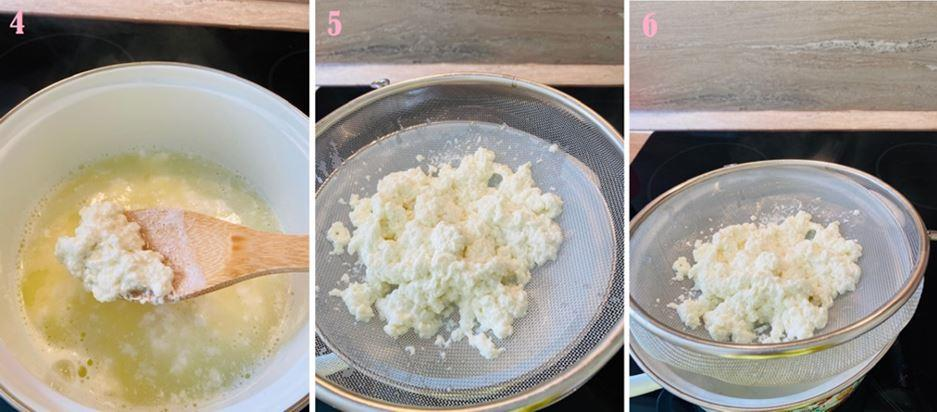

Climat oblige, le petit-déjeuner est souvent un repas essentiel et passablement copieux en Russie. Il n’est pas rare qu’il s’apparente plus à un repas complet qu’à la collation que l’on sert généralement en France.
L’un des produits-phares du petit-déjeuner russe n’est autre que le fameux « Tvorog », également connu sous le nom de « Quark », qui est une espèce de fromage blanc caillé très typique de la région. On le trouve malheureusement peu en France, où l’on préfère les fromages blancs lisses, et sinon, dans les boutiques spécialisées en produits d’Europe de l’Est, sous sa forme industrielle. Rien ne vaut pourtant un bon tvorog frais pour réaliser cette recette. Bien qu’il soit très peu probable que vous en trouviez au marché à Paris ou en Province, la bonne nouvelle du jour est que je vais vous apprendre à en produire vous-mêmes.
Une fois votre tvorog prêt, façonner et cuire des syrniki est un jeu d’enfant. Je peux du reste vous confirmer que mes enfants sont toujours disposés à mettre la main à la pâte quand ils savent que des syrniki sont au menu…
Première étape : Préparer le tvorog
INGRÉDIENTS
1 litre de lait frais, idéalement micro filtré plutôt que pasteurisé
2 cuillères à soupe de vinaigre blanc
PRÉPARATION
Portez le lait à ébullition en remuant fréquemment pour ne pas qu’il attache (image 1)
Une fois à ébullition, retirez-le du feu
Versez le vinaigre dans le lait (image 2)
Remuez bien avec une spatule (image 3) jusqu’à obtention d’un caillage prononcé (image 4)
Égouttez et récupérez la pâte caillée (images 5 & 6), que vous laisserez refroidir
Pour un litre de lait, vous devriez récupérer environ 150 grammes de tvorog.
Deuxième étape : Façonner et cuire les syrniki
INGRÉDIENTS
Pour deux personnes et quatre syrnikis (multiplier les quantités en fonction de vos besoins)
150g de tvorog
1 œuf
1,5 cuillère à soupe de sucre
1,5 cuillère à soupe de farine
Un peu de matière grasse neutre
Une pincée de vanille en poudre (facultatif)
Un peu de farine pour le plan de travail
FAÇONNAGE ET CUISSON
Émiettez le tvorog à la fourchette (image 7)
Cassez et ajoutez un œuf (image 8), et mélangez le tout
Ajoutez le sucre (image 9), la farine (image 10), et éventuellement une pincée de vanille, puis mélangez énergiquement pour obtenir une pâte homogène
Mouillez vos mains avec de l’eau afin que la pâte n’attache pas, farinez votre plan de travail, et confectionnez quatre petites boules de taille égale (image 11)
Aplatissez les boules pour en faire de jolies petites galettes rondes épaisses de quelques centimètres (image 12)
Dans une poêle, faites chauffer votre matière grasse (image 13). Elle doit être bien chaude.
Faites cuire les galettes d’un côté jusqu’à ce qu’elles soient bien dorées (image 14), puis de l’autre (image 15). Les syrnikis sont déjà prêts !
Service
Servez vos syrnikis tièdes plutôt que trop chauds avec de la crème fraiche ou aigre (« smetana »), ils tiendront beaucoup mieux. Vous pouvez les décorer avec un peu de sucre glace, ajouter un peu de douceur avec de la confiture, du miel ou, si la saison s’y prête, de l’acidité et de la fraîcheur avec des fruits des bois et un brin de menthe.
Partager cette page